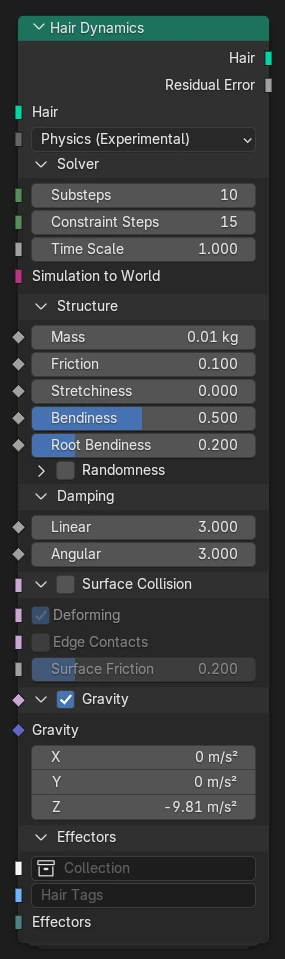
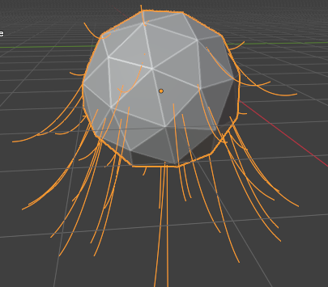
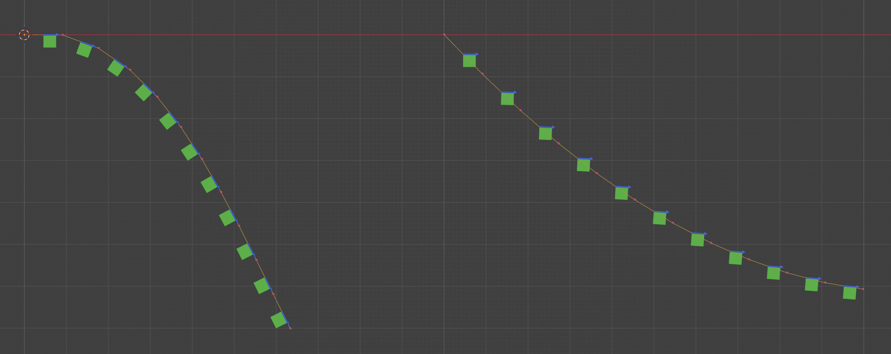

Hair Dynamics¶

Node Hair Dynamics tạo chuyển động cho geometry curve dưới dạng các sợi được làm animation hoặc mô phỏng vật lý động.
Node có hai chế độ chung:
- Animation:
Các curve đi theo animation của bề mặt mà tóc gắn vào.
- Physics:
Các curve được mô phỏng như những thanh mỏng, dẻo, gắn vào bề mặt tóc.
Chuyển động của các curve tóc được mô phỏng theo thời gian bằng node XPBD Solver. Node Hair Dynamics lo việc thiết lập các ràng buộc cấu trúc cần thiết và các effector thông dụng, như trọng lực, cản (damping), và va chạm với surface mesh. Các hiệu ứng bổ sung có thể được thêm qua typed bundle.
Cảnh báo
Mô phỏng vật lý cho hair dynamics là một tính năng thử nghiệm và có thể thay đổi đáng kể trong tương lai.
Inputs¶
- Hair
Geometry curve cần được làm animation hoặc mô phỏng. Hình dạng của các curve tóc xác định hình dạng nghỉ (rest shape) tự nhiên.
- Mode
Chọn giữa hành vi Animation và Physics.
Solver Physics¶
Cài đặt chung cho bộ giải vật lý (physics solver).
- Substeps
Số substep mà simulation sử dụng. Tăng substep có thể giúp cải thiện độ ổn định trong một số trường hợp, nhưng cũng làm tăng chi phí do phải dò tìm va chạm lặp lại.
- Constraint Iterations
Số lần lặp mà bộ giải ràng buộc (constraint solver) thực hiện để đảm bảo mọi ràng buộc được thỏa mãn. Nếu sai số còn lại (residual error) lớn hơn 1 thì nên tăng số lần lặp ràng buộc.
- Time Scale
Hệ số tỷ lệ chung cho các bước thời gian. Hệ số tỷ lệ thời gian lớn hơn cho chuyển động tóc nhanh hơn.
- Simulation to World
Phép biến đổi tùy chọn từ không gian object sang không gian simulation. Phép biến đổi này xác định không gian mà toàn bộ mô phỏng vật lý diễn ra trong đó. Nếu không chỉ định phép biến đổi nào thì object thường phải đứng yên.
Structure Physics¶
Cấu hình các thuộc tính vật lý bên trong của geometry tóc.
- Mass
Thuộc tính khối lượng của các curve point.
Giá trị này không nhất thiết phải "thực tế" dựa trên mật độ tóc vật lý, mà nên được xem như một hệ số ảnh hưởng của ngoại lực. Các giá trị cực đoan có thể dẫn đến bất ổn số học.
- Friction
Hệ số cho ma sát tĩnh và ma sát động. Hệ số ma sát nhỏ mô phỏng vật liệu trơn trượt, trong khi giá trị lớn tạo hành vi dính.
Ý nghĩa chính xác của hệ số có thể được hiểu là tiếp tuyến của góc ma sát (wikipedia): Khi góc giữa lực tiếp xúc và normal bề mặt còn nhỏ, tiếp xúc ở trạng thái ma sát tĩnh và dính vào bề mặt. Khi lực tiếp xúc vượt quá góc ma sát, nó chuyển sang ma sát động và giảm tốc tỉ lệ thuận với vận tốc tiếp tuyến.
- Stretchiness
Hệ số mô tả mức độ giãn cho phép của các curve tóc so với chiều dài nghỉ của chúng. Hệ số stretchiness bằng 0 không cho phép giãn nào, trong khi stretchiness bằng 1 cho phép curve dài lên tới 10 lần chiều dài nghỉ dưới trọng lực của chính chúng.
- Bendiness
Hệ số mô tả mức độ uốn cho phép giữa các đoạn tóc so với hướng nghỉ của chúng. Hệ số bendiness bằng 0 tạo curve cứng chống lại mọi sự uốn, trong khi hệ số bằng 1 tương ứng curve mềm hầu như không có lực kháng uốn.
- Root Bendiness
Hệ số cứng uốn riêng cho chân tóc. Root bendiness bằng 0 giữ chân tóc cứng theo normal bề mặt, trong khi bendiness bằng 1 cho phép uốn cong tùy ý ra xa normal.
Structure Randomness Physics¶
Nếu bật, một độ lệch ngẫu nhiên sẽ được cộng vào các hệ số stretchiness và bendiness tại từng điểm.
- Stretchiness
Phạm vi độ lệch ngẫu nhiên được cộng vào đầu vào Stretchiness.
- Bendiness
Phạm vi độ lệch ngẫu nhiên được cộng vào đầu vào Bendiness.
- Root Bendiness
Phạm vi độ lệch ngẫu nhiên được cộng vào đầu vào Root Bendiness.
Damping Physics¶
Tính năng cản (damping) chung, đơn giản, làm giảm vận tốc của mọi điểm đang chuyển động, mô phỏng lực cản trong không khí hoặc môi trường khác. Hệ số damping mô tả mức giảm tương đối của vận tốc mỗi giây, xấp xỉ damping theo hàm mũ.
- Linear
Hệ số damping cho vận tốc tuyến tính.
- Angular
Hệ số damping cho vận tốc góc.
Surface Collision Physics¶
Bật va chạm của các curve tóc với surface mesh mà chúng gắn vào.
- Deforming
Nên bật nếu surface mesh bị biến dạng theo thời gian. Trong trường hợp này, từng điểm của collider được nội suy riêng biệt.
Nếu surface mesh không bị biến dạng thì có thể tắt tùy chọn này để cải thiện hiệu năng. Điều này cũng khả dụng khi bề mặt được biến đổi như một instance mà không thay đổi vị trí cục bộ.
- Edge Contacts
Bật phát hiện tiếp xúc giữa các đoạn tóc và edge của collision mesh. Điều này ngăn việc xuyên nhau trong trường hợp các đoạn tóc dài, mỏng và/hoặc collider có góc nhọn.
Trong trường hợp collider trơn nhẵn mà việc xuyên nhau nhẹ không quan trọng, có thể tắt tùy chọn này để cải thiện hiệu năng.
- Surface Friction
Hệ số ma sát của vật liệu bề mặt. Xem Friction để hiểu ý nghĩa của giá trị hệ số.
Hệ số ma sát hiệu dụng của một tiếp xúc là trung bình nhân hình học (căn bậc hai của tích) của các hệ số của hai vật liệu tiếp xúc.
Gravity Physics¶
Bật trọng lực.
- Gravity
Vector gia tốc trong không gian simulation, thường theo hướng Z âm.
Effectors Physics¶
Các effector bên ngoài bổ sung được thêm vào simulation. Effector có thể là trường lực bên ngoài, collider, hoặc custom effector được thực thi ở một giai đoạn nào đó của simulation (xem Custom Effector)
- Collection
Một collection chứa các object có effector.
Effector có thể được thêm vào geometry của object bằng node Set Effector.
- Hair tags
Các thẻ lọc được đặt trên geometry tóc. Các thẻ này có thể dùng để giới hạn effector, trong trường hợp một effector được dùng trong nhiều ngữ cảnh simulation.
- Effectors
Một bundle gồm các effector định nghĩa cục bộ. Chúng có thể được tạo trong một node tree và truyền thẳng vào node simulation.
Outputs¶
- Hair
Geometry curve sau khi bị biến dạng bởi animation hoặc vật lý.
- Residual error Physics
Sai số tương đối trung bình ở cuối substep cuối cùng. Giá trị này cho biết chất lượng của simulation:
Giá trị sai số bằng 1 hoặc nhỏ hơn được coi là kết quả tốt.
Nếu sai số liên tục lớn hơn 1, solver có thể cần nhiều lần lặp ràng buộc hơn, và có thể cả nhiều substep hơn, để cho ra kết quả chính xác.
Nếu giá trị sai số chỉ vượt 1 trong một số tình huống nhất định, điều đó có thể cho thấy simulation bị ràng buộc quá mức, ví dụ do collider chồng lấn hoặc lực cực đại.
Nếu giá trị rất nhỏ thì số lần lặp hoặc substep đang lớn không cần thiết và có thể cải thiện hiệu năng bằng cách giảm số lần lặp.
Ghi chú
Sai số tương đối dựa trên các giá trị ngưỡng được định nghĩa cho từng kiểu ràng buộc. Các ngưỡng này hiện chưa được tiết lộ qua node asset và được cố định ở 1 milimet cho ràng buộc dựa trên khoảng cách, và 0.01 radian ≈ 0.57° cho ràng buộc xoay. Giá trị cuối cùng được tính theo căn bậc hai trung bình bình phương (root mean square) của tổng mọi sai số ràng buộc tương đối.
Vấn Đề Thường Gặp¶
Thiếu lần lặp ràng buộc¶
Thiết lập simulation càng phức tạp thì solver càng cần nhiều Constraint Iterations để đi đến nghiệm đúng. Một simulation thiếu lần lặp có thể trông hợp lý về vật lý, nhưng lại thể hiện độ giãn và độ uốn nhiều hơn mức đáng lẽ.
Kiểm tra giá trị Residual Error để xác nhận nghiệm đủ chính xác. Lý tưởng là giá trị không nên vượt quá 1.
Ranh giới collider hở¶
Hiện tại chỉ hỗ trợ collider với mesh kín. Collider phải là mesh manifold (không có ranh giới hở), ít nhất ở những vùng dự kiến có va chạm.
Mesh collider có ranh giới hở có thể gây hiện tượng nhảy đột ngột. Một điểm có thể di chuyển quanh ranh giới hở mà không tạo ra tiếp xúc, rồi tiến tới một face của mesh từ phía sau. Khi đến gần mesh, một tiếp xúc đột ngột được phát hiện và điểm bị đẩy ra khỏi mesh.
Ví dụ báo cáo lỗi: #159657.
Xuyên qua collider (tunneling)¶
Geometry chuyển động nhanh có thể không va chạm đáng tin cậy với mesh mỏng (hiện tượng "tunneling").
Collider phải có độ dày nhất định để tránh tunneling, tùy vào tốc độ va chạm và số substep: với nhiều substep hơn thì collider mỏng hơn vẫn khả dụng, nhưng chỉ đến một mức nhất định (xem Too many substeps).
Stretchiness mà không có bendiness¶
Simulation curve tóc với stretchiness cao nhưng bendiness thấp có thể dẫn đến biến dạng phi vật lý, như thể tóc đang cong ngược lên trên.

Điều này gây ra bởi shearing (trượt cắt) quá mức, khi vị trí được phép lệch khỏi hướng tiến của vòng quay (mũi tên màu xanh trong hình dưới đây), nhưng vòng quay vẫn giữ cứng.

Trường hợp này không được mô hình Cosserat cho thanh mỏng hỗ trợ tốt, vì trong mô hình đó độ giãn và độ uốn liên quan trực tiếp đến nhau. Các mô hình ràng buộc trong tương lai có thể hỗ trợ tốt hơn các cấu hình như vậy.
Quá nhiều substep¶
Dùng quá nhiều substep có thể dẫn đến sai số số học, khiến đáp ứng ràng buộc thay đổi đột ngột khi stretchiness hoặc bendiness thay đổi. Khuyến nghị giữ Substeps dưới 20 và thay vào đó tăng Constraint Iterations nếu cần độ chính xác cao hơn.
Nguyên nhân gốc là các hệ số nhân dùng bình phương nghịch đảo của bước (sub)step thời gian, dẫn đến sai số làm tròn.